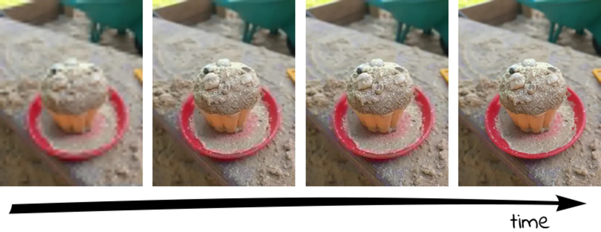

1. JPEG介绍
JPEG 是Joint Photographic Experts Group（联合图像专家小组）的缩写，是第一个国际图像压缩标准。JPEG图像压缩算法能够在提供良好的压缩性能的同时，具有比较好的重建质量，被广泛应用于图像、视频处理领域。
2. 保存方式
JPEG文件格式有两种保存方式。他们是Baseline JPEG和Progressive JPEG.
两种格式有相同尺寸以及图像数据，他们的扩展名也是相同的，唯一的区别是二者显示的方式不同。
2.1 Baseline JPEG （基线）
这种类型的JPEG文件存储方式是按从上到下的扫描方式，把每一行顺序的保存在JPEG文件中。打开这个文件显示它的内容时，数据将按照存储时的顺序从上到下一行一行的被显示出来，直到所有的数据都被读完，就完成了整张图片的显示。如果文件较大或者网络下载速度较慢，那么就会看到图片被一行行加载的效果，这种格式的JPEG没有什么优点，因此，一般都推荐使用Progressive JPEG
2.2 Progressive JPEG （渐进）
和Baseline一遍扫描不同，Progressive JPEG文件包含多次扫描，这些扫描顺寻的存储在JPEG文件中。打开文件过程中，会先显示整个图片的模糊轮廓，随着扫描次数的增加，图片变得越来越清晰。这种格式的主要优点是在网络较慢的情况下，可以看到图片的轮廓知道正在加载的图片大概是什么。在一些网站打开较大图片时，你就会注意到这种技术。

3. 如何创建
- 使用Photoshop
- 文件 > 存储为 > 先点击保存，随后会弹出JPEG选项
- 如果想创建渐进式JPEG，选择连续
4. 应用
- 基本JPEG和渐进JPEG该什么时候使用？
- 当您的JPEG图像低于10K时，最好保存为基本JPEG（估计有75％的可能性会更小）
对于超过10K的文件，渐进式JPEG将为您提供更好的压缩（在94％的情况下）
Chrome + Firefox + IE9浏览器下，渐进式图片加载更快，而且是快很多，至于其他浏览器，与基本式图片的加载一致，至少不会拖后腿。 - 渐进式图片也有不足，就是吃CPU吃内存。